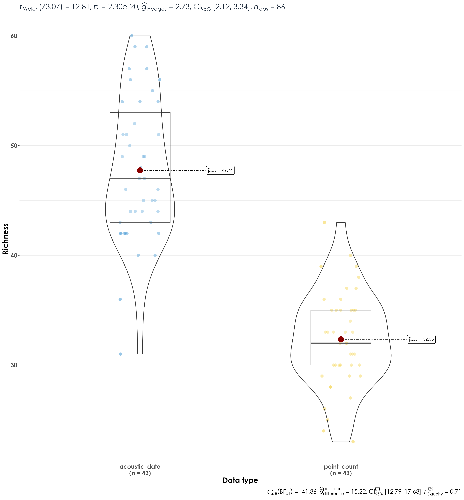

Section 3 Richness estimates
In this script, we will calculate species richness estimates across point count surveys and acoustic data.
3.1 Install necessary libraries
library(tidyverse)
library(dplyr)
library(stringr)
library(vegan)
library(ggplot2)
library(scico)
library(data.table)
library(extrafont)
library(ggstatsplot)
# Source any custom/other internal functions necessary for analysis
source("code/01_internal-functions.R")3.2 Load dataframe containing point count and acoustic data
datSubset <- read.csv("results/datSubset.csv")3.3 Load species trait data
trait <- read.csv("data/species-trait-dat.csv")
# add it to the subset data
datSubset <- left_join(datSubset,trait[,c(1,7,8)], by = "scientific_name")3.4 Estimate richness for point count and acoustic data
# estimate total abundance across all species for each site
abundance <- datSubset %>%
filter(data_type == "point_count") %>%
group_by(site_id, restoration_type, scientific_name,
common_name, eBird_codes, habitat, foraging_habit) %>%
summarise(totAbundance = sum(number)) %>%
ungroup()
# estimate richness for point count data
pc_richness <- abundance %>%
mutate(forRichness = case_when(totAbundance > 0 ~ 1)) %>%
group_by(site_id,restoration_type) %>%
summarise(richness = sum(forRichness)) %>%
mutate(data_type = "point_count") %>%
ungroup()
# estimate total number of detections across the acoustic data
# note: we cannot call this abundance as it refers to the total number of vocalizations across a 16-min period across all sites
detections <- datSubset %>%
filter(data_type == "acoustic_data") %>%
group_by(site_id, restoration_type, scientific_name,
common_name, eBird_codes, habitat, foraging_habit) %>%
summarise(totDetections = sum(number)) %>%
ungroup()
# estimate richness for acoustic data
aru_richness <- detections %>%
mutate(forRichness = case_when(totDetections > 0 ~ 1)) %>%
group_by(site_id,restoration_type) %>%
summarise(richness = sum(forRichness)) %>%
mutate(data_type = "acoustic_data") %>%
ungroup()3.5 Visualize differences in richness between point count data and acoustic data
richness <- bind_rows(pc_richness, aru_richness)
# reordering factors for plotting
richness$restoration_type <- factor(richness$restoration_type, levels = c("BM", "AR", "NR"))
# Here, we use functions from the package ggstatsplot (more information can be found here:https://indrajeetpatil.github.io/ggstatsplot/index.html)
fig_richness <- richness %>%
grouped_ggbetweenstats(x = data_type,
y = richness,
grouping.var = restoration_type,
xlab = "Data type",
ylab = "Richness",
pairwise.display = "significant",
package = "ggsci",
palette = "default_jco",
plotgrid.args = list(nrow = 3),
ggplot.component = list(theme(text = element_text(family = "Century Gothic", size = 15, face = "bold"),plot.title = element_text(family = "Century Gothic",
size = 18, face = "bold"),
plot.subtitle = element_text(family = "Century Gothic",
size = 15, face = "bold",color="#1b2838"),
axis.title = element_text(family = "Century Gothic",
size = 15, face = "bold"))))
ggsave(fig_richness, filename = "figs/fig_richness.png", width = 13, height = 14, device = png(), units = "in", dpi = 300)
dev.off()

Significant differences in richness between acoustic data and point count data across treatment types
3.6 Visualize differences in richness as a function of species trait
Here, we examine if there are differences in species richness across treatment types (between point counts and acoustic surveys) as a function of habitat affiliation - whether a species is a rainforest specialist or an open-country generalists.
# estimate richness by trait for point count data
trait_pc_richness <- abundance %>%
mutate(forRichness = case_when(totAbundance > 0 ~ 1)) %>%
group_by(site_id,restoration_type, habitat) %>%
summarise(richness = sum(forRichness)) %>%
mutate(data_type = "point_count") %>%
ungroup()
# estimate richness by trait for acoustic data
trait_aru_richness <- detections %>%
mutate(forRichness = case_when(totDetections > 0 ~ 1)) %>%
group_by(site_id,restoration_type, habitat) %>%
summarise(richness = sum(forRichness)) %>%
mutate(data_type = "acoustic_data") %>%
ungroup()
# bind rows prior to visualization
trait_richness <- bind_rows(trait_pc_richness, trait_aru_richness)
# reordering factors for plotting
trait_richness$restoration_type <- factor(trait_richness$restoration_type, levels = c("BM", "AR", "NR"))
# visualization for rainforest birds
fig_rf_richness <- trait_richness %>%
filter(habitat == "RF") %>%
grouped_ggbetweenstats(x = data_type,
y = richness,
grouping.var = restoration_type,
xlab = "Data type",
ylab = "Richness",
pairwise.display = "significant",
package = "ggsci",
palette = "default_jco",
plotgrid.args = list(nrow = 3),
ggplot.component = list(theme(text = element_text(family = "Century Gothic", size = 15, face = "bold"),plot.title = element_text(family = "Century Gothic",
size = 18, face = "bold"),
plot.subtitle = element_text(family = "Century Gothic",
size = 15, face = "bold",color="#1b2838"),
axis.title = element_text(family = "Century Gothic",
size = 15, face = "bold"))))
ggsave(fig_rf_richness, filename = "figs/fig_rainforestBirds_richness.png", width = 13, height = 14, device = png(), units = "in", dpi = 300)
dev.off()
# visualization for open-country birds
fig_oc_richness <- trait_richness %>%
filter(habitat == "OC") %>%
grouped_ggbetweenstats(x = data_type,
y = richness,
grouping.var = restoration_type,
xlab = "Data type",
ylab = "Richness",
pairwise.display = "significant",
package = "ggsci",
palette = "default_jco",
plotgrid.args = list(nrow = 3),
ggplot.component = list(theme(text = element_text(family = "Century Gothic", size = 15, face = "bold"),plot.title = element_text(family = "Century Gothic",
size = 18, face = "bold"),
plot.subtitle = element_text(family = "Century Gothic",
size = 15, face = "bold",color="#1b2838"),
axis.title = element_text(family = "Century Gothic",
size = 15, face = "bold"))))
ggsave(fig_oc_richness, filename = "figs/fig_openCountryBirds_richness.png", width = 13, height = 14, device = png(), units = "in", dpi = 300)
dev.off()